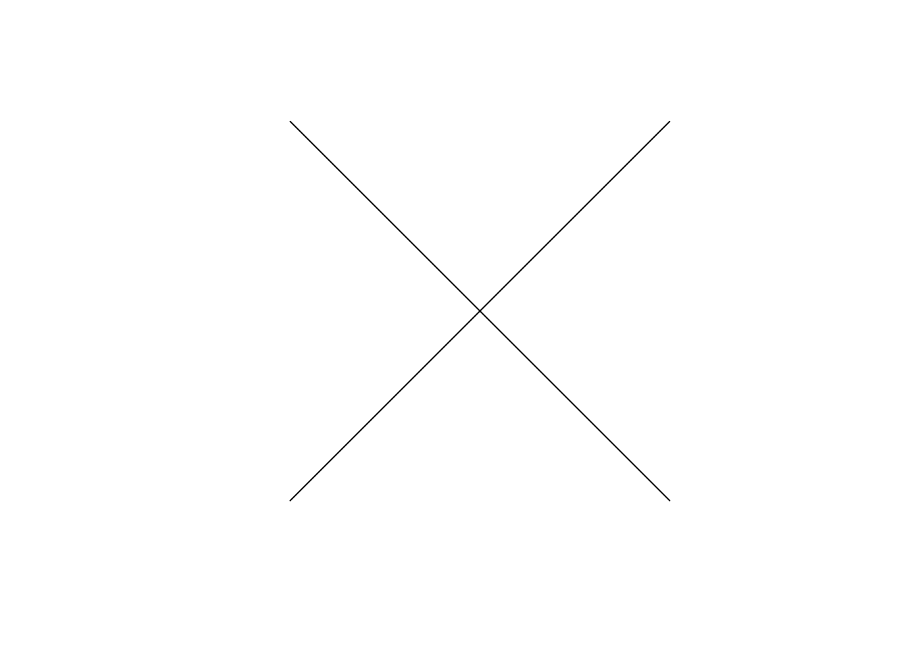
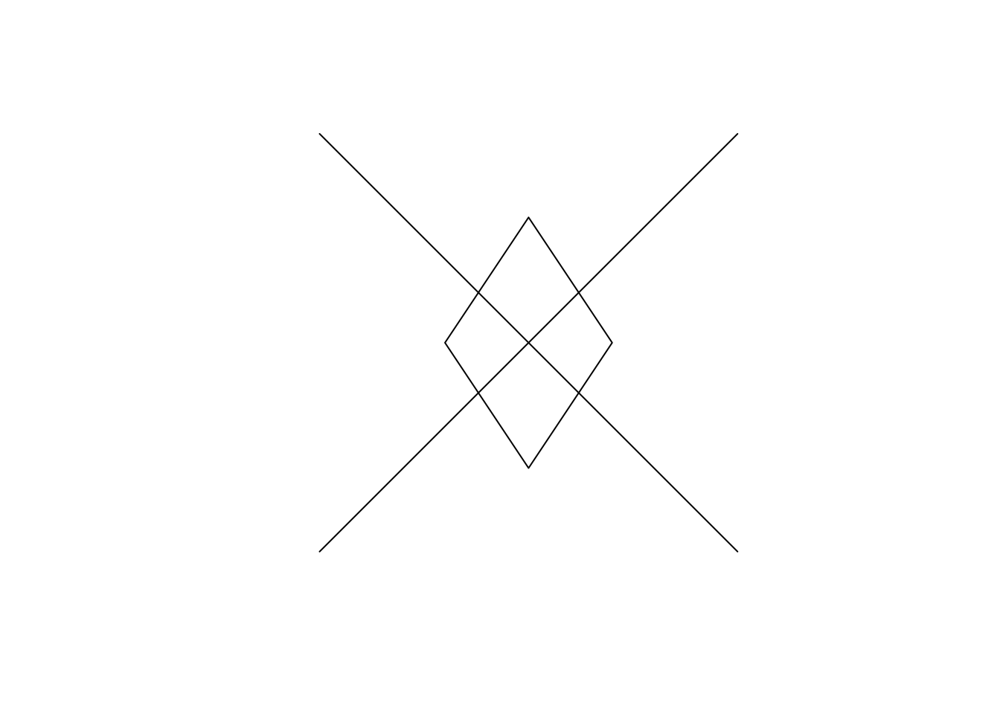
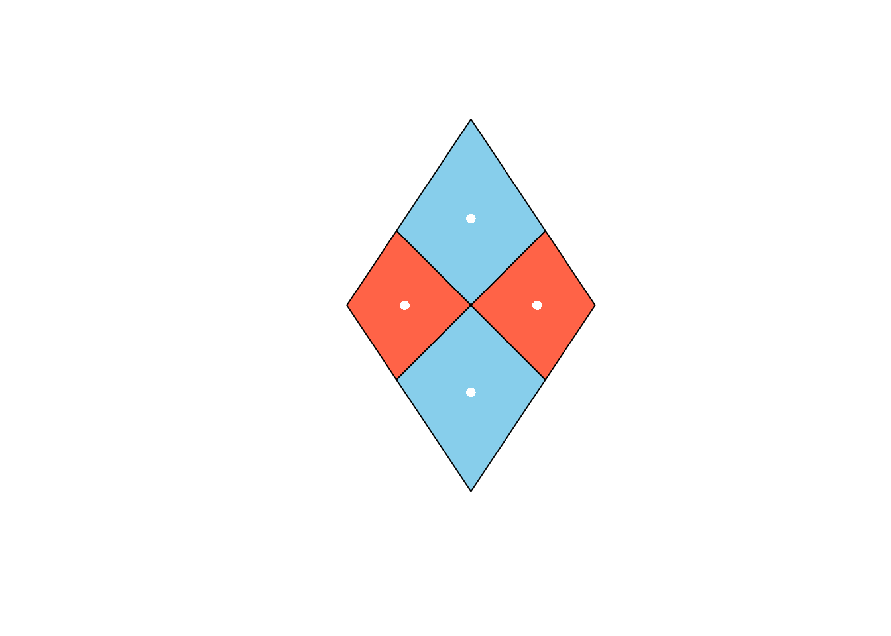
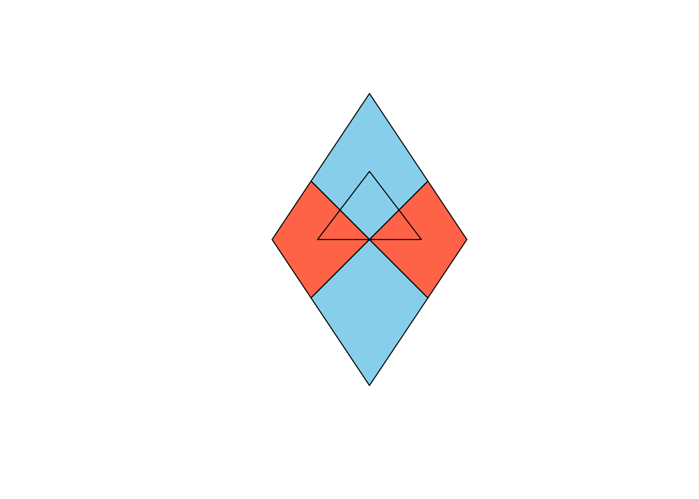
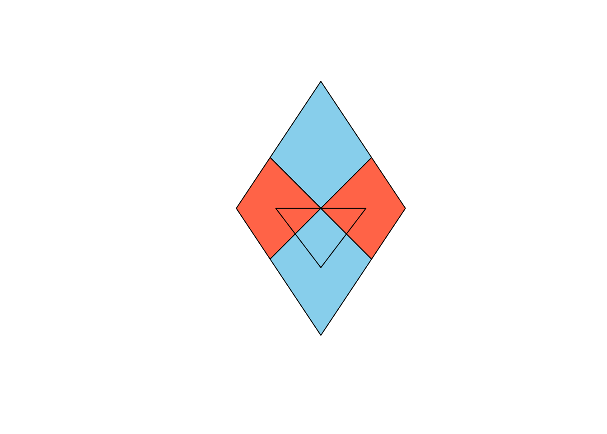

library(tigris)
ca_counties <- counties(state = "CA", cb = TRUE, year = 2024)5
Spatial data 1
There are multiple R packages that can be used to load geographic data stored in the simple features format. rnaturalearth stores data at the global scale: countries and, at finer resolution, their states and provinces. tigris stores data from the US Census at a much finer grain of detail: counties, census blocks, zip codes, etc. It is updated yearly.
- Using the
rnaturalearthpackage, download map data for a country of your choosing (not the US or Mexico) insfformat. How many simple features are in the data set? What datum was used to record it (see “Geodetic CRS”)?
- Using the
sfandggplot2packages, make a map of your country1.
- Using the
tigrispackage, download a map of California that shows county outlines as of 2024. How many simple features are in the data set? What datum was used to record it?
- Make a map of the counties of California two ways: unprojected, in the longitude and latitude the data were recorded in, and projected with the Albers Equal Area projection2. How do the two maps compare?
- UC Berkeley is host to the Northern California Earthquake Data Center (https://ncedc.org). Its records of the earthquakes of magnitude 3 or more in California and nearby, from September 1 to October 16, 2025, are in a csv file. Download
ca-quakes.csvand read it in with the following.
quakes <- read_csv("ca-quakes.csv")Add the locations of these earthquakes to both of your CA maps using geom_point().
- As you will have noticed, on the Albers map all of the earthquakes land on a single dot in central California.
geom_sf()drew the counties in Albers coordinates, which are meters east and north of a point near 120° W, 38° N.geom_point()took the earthquakes’ longitudes and latitudes to be meters too, so it placed every earthquake within about 130 meters of that point. Remake your Albers map the way we fixed the storms in lecture: convert the earthquake data frame to an sf object in WGS 84 (EPSG 4326) withst_as_sf(), then transform it to the Albers projection (EPSG 3310) withst_transform()3.
Spatial II
The following exercises serve as an introduction to the functionality of the sf package. Anytime you use a new function, use ? to learn how it works. Some of these exercises ask you to plot the result. Plots are provided to check your answer.
- The map of California in lecture was drawn from a shapefile. Download
CA_State.zip, unzip it into the folder you’re working in, and read the shapefile in with the following.
library(sf)
ca <- st_read("CA_State/CA_State.shp")Replicate the map of California from lecture, then compute the centroid of the state and add it to the map as a point.
- Optional Challenge: Which county does the centroid of California lie in? Find out computationally, using the
ca_countiesthat you downloaded withtigrisin the Spatial I problems4.
- Following the approach used in lecture, use
st_linestringto create two separate line segments calledl1that stretches from \((0, 0)\) to \((1, 1)\) andl2that stretches from \((0, 1)\) to \((1, 0)\). View them using base Rplot()5.

- Form a spatial data frame (an object with classes
sfanddata.frame) calledmy_lineswith two columns:
id: an attribute with values1and2.geom: a simple feature (geometry) column containing the two lines.
Use the coordinate reference system “OGC:CRS84”.
- Create a second spatial data frame, this one with a diamond-shaped polygon. The diamond should have corners at \((.5, .8)\), \((.3, .5)\), \((.5, .2)\), and \((.7, .5)\) and use the same crs. It should have an attribute called
pricewith the value100. Call your spatial data framemy_diamondand plot it atop your lines.

- Calculate the dimension, length, and area of
my_lines.
- Calculate the dimension, length, and area of
my_diamond.
- Use the
st_split()function inside thelwgeompackage to split the diamond into four diamonds using your lines and name the resulting objectsplit_diamond. After inspecting the result, run the following line to extract each of the polygons into a separate feature (row) of a spatial data frame.
split_diamond <- split_diamond |>
st_collection_extract("POLYGON")Plot the resulting sf collection of 4 features, with each of the split diamonds filled with a color6.
- Compute the centroids of the four split diamonds, call them
my_cents, and add them to your plot. Set theircolandpchas you like.

- Using what you know about data frame subsetting, remove the bottom-most centroid. Then take the union of the three remaining points, form a convex hull from them, and save the polygon to
my_tri_up7. Plotmy_tri_upon top of your split diamond.

- Repeat the previous exercise, but form an sf object called
my_tri_downthat has the top-most centroid removed.

- Under the definition of “intersects”, which of your split diamonds intersect the
my_tri_up? Check by doing a spatial join.
Footnotes
If you are unsatisfied with the resolution of your map, you can tinker with the
scaleargument of thene_countries()function.↩︎Each projection has a numeric code (its EPSG code). The Albers Equal Area projection for California is 3310. Pass that code to the
crsargument of thest_transform()function insf.↩︎Hint: since
quakes_albersis an sf object instead of a tibble,geom_point()will no longer work. You can add it in a secondgeom_sf()layer (the first will be for the basemap).↩︎Compare the CRS of
ca_countieswith the CRS of your centroid.↩︎Each object will require a separate call to
plot(). You can addadd = TRUEtoplot()so that the contents of the second get added to the first. Note that these plot additions don’t carry over from code cell to code cell.↩︎You can add colors to
plot()using thecolargument and callcolors()at the console to see the color names available in base R. I usedcol = c("skyblue", "tomato")but you’re welcome to pick your own colors.↩︎The functions for these set operations in
sfare exactly as you’d expect: the name of the operation prepended byst_. Note also that the union operation will drop thesfclass. You’ll need to run your object throughst_sf()to get it back.↩︎